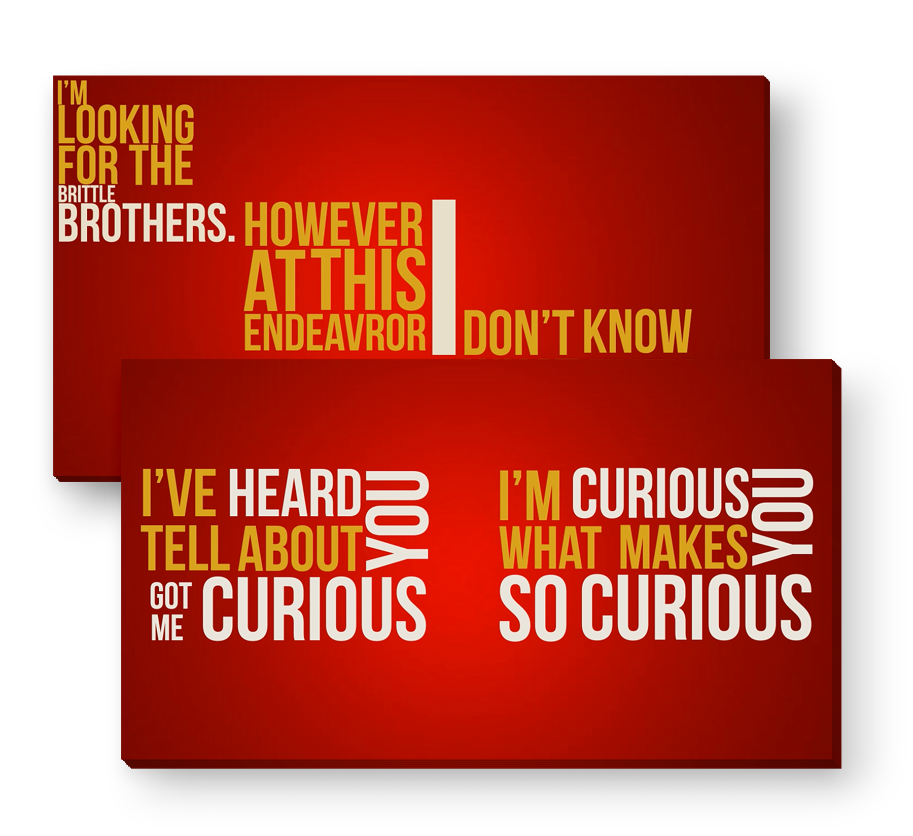

django
kinetic typography
01
PRESENTATION
Promouvoir la bande annonce du film de Quentin Tarantino "DJANGO" en typographie cinétique.
J’ai pris le parti de n’utiliser que de la typographie, en mettant en valeur texte/son et texte/image.
J’ai utilisé les codes couleurs des films de Quentin Tarantino, le rouge et le jaune.
